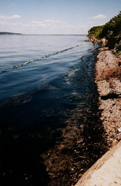
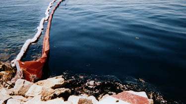
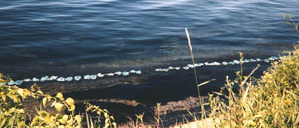
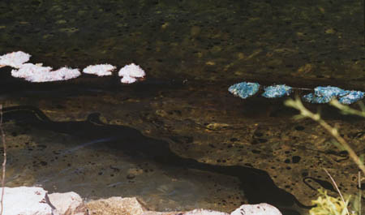
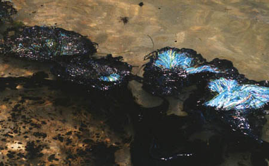
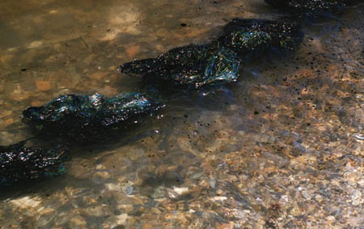
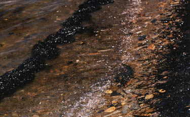
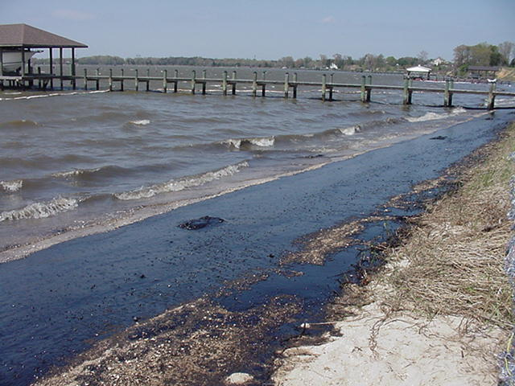
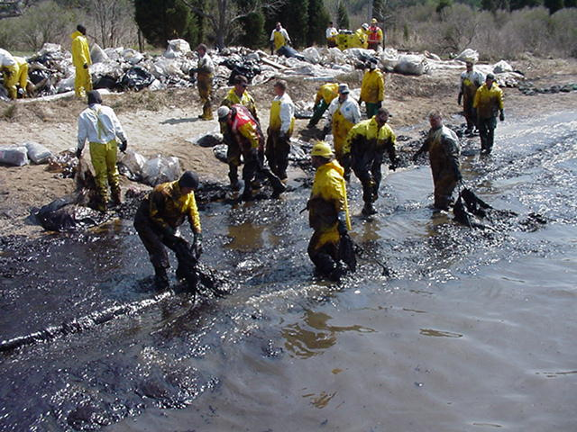
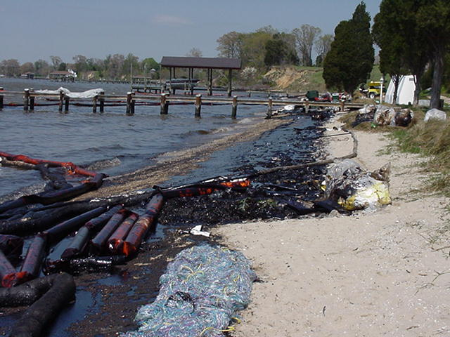

Environmental Stuff...
This page is going to be about issues affecting
our environment that I am interested in changing,
stopping, or working towards fixing...

This is a picture I got off of the Save the Bay Website,
its @McAllister Point after the oil spill...
Below are more of the shore, and the ways they
tried to clean the oil...


Both of these are clean up efforts after an
oil spill... doesn't look like very much does it? That
was save the bay's efforts...

Pom Poms used to control and absorb the oil.
These are fresh pom poms, notice the progression as they absorb.

As they start to absorb...

almost saturated...

saturated and ready to be taken out of the water...

This is yet another shoreline affected
by an oil spill...

This is one of the clean up crews working
on the oil spill above...

This is one of the ways that people clean the
oil out of water... long cloth like things are placed in
the water, and kept upright by bowies...
But those are what they look like when dragged onto the shore.
These are only some pictures I found. But I love nature, and Science...
I spend lots of my time reading things on environments affected
by unnecessary human pollution. I thought maybe oil spills
make me think the most, and make me mad about a lot
of ways to prevent them. so I decided to make a
page that would show other people some of
the things I think, and not only the
things I like...
-manda®